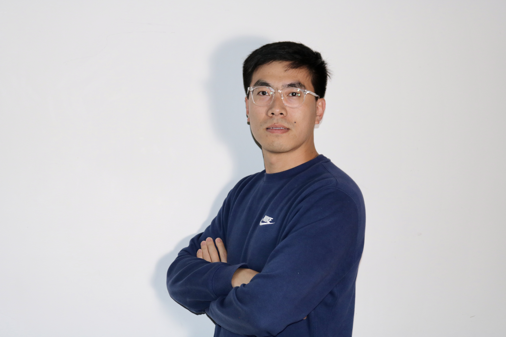

|  |
Wei Sun Selected Publications - Services - Awards
redsunwit@gmail.com I received my Ph.D. from the Department of Computer Science and Engineering at the Ohio State University, Columbus, Ohio, USA in 2022. Subsequently, I joined the Duke University and then University of California San Diego as a postdoctoral researcher.I create innovative applications of computing to health, safety, and privacy. I work across signal processing, machine learning, and networking to build intelligent systems that can tackle hard technical and societal problems from designing the hardware and software systems to the deployment and evaluation of these systems in real-world settings. I am looking for a tenure-track assistant professor position in USA |
Selected Publications
- Pre-OSU Publications
| RFDrive: Tagged Human-Vehicle Interaction for All Wei Sun and Kannan Srinivasan ACM JCSS 2024 |
| SoK: Secure Human-centered Wireless Sensing Wei Sun, Tingjun Chen, and Neil Gong PETS 2024 |
| Reminding Drivers of the Stalking Vehicles on the Road Wei Sun, Kannan Srinivasan ISOC VehicleSec 2023 Best Paper Award Runner-Up |
 video
video | Grid MIMO: Exploiting Spatiality of Powerline Infrastructure for MIMO Wei Sun, Bo Chen, Vivek Yenamandra, and Kannan Srinivasan IEEE PerCom 2023 Best WiP Paper Award Runner-Up |
| On the Feasibility of Reasoning about the Internal States of Blackbox IoT Devices Using Side-Channel Information Wei Sun, Yuwei Xiao, Haojian Jin, and Dinesh Bharadia arXiv 2023 |
 | Short: Liquid Thickness Sensing with Backscattered Signals for Dysphagia Wei Sun, Ishaan Chansarkar, and Kannan Srinivasan IEEE/ACM CHASE 2023 (direct to Elsevier Smart Health Journal) |
 | Users are Closer than they Appear: Protecting User Location from WiFi APs Roshan Ayyalasomayajula, Aditya Arun, Wei Sun, and Dinesh Bharadia ACM Hotmobile 2023 |
| VibWall: Smartphone’s Vibration Challenge-Response for Wall Crack Detection Wei Sun ACM COMPASS/JCSS 2023 (Featured in ACM Kudos) |
| On the Feasibility of Securing Vehicle-Pavement Interaction Wei Sun, Kannan Srinivasan ACM IMWUT/Ubicomp 2022 |
| Embracing Collisions to Increase Fidelity of Sensing Systems with COTS Tags Jiaqi Xu, Wei Sun, Kannan Srinivasan ACM IMWUT/Ubicomp 2021 |
 | Healthy Diapering with Passive RFIDs for Diaper Wetness Sensing and Urine pH Identification Wei Sun, Kannan Srinivasan ACM MobiSys 2021 |
 | Allergie: Relative Vehicular Localization with Commodity RFID System Wei Sun, Kannan Srinivasan IEEE RFID 2020 |
 | Multimodal content analysis for effective advertisements on Youtube Nikhita Vedula, Wei Sun, Hyunhwan Lee, Harsh Gupta, Mitsunori Ogihara, Joseph Johnson, Gang Ren, Srinivasan Parthasarathy IEEE ICDM 2017 |
Awards
- 2023 IEEE PerCom Best WiP Paper Award Runner-Up
- 2023 ISOC VehicleSec Best Paper Award Runner-Up
- 2023 The Gary Marsden Travel Award
- 2023 IEEE PerCom NSF Travel Grant Award
- 2022 NSF Athena Postdoctoral Scholar
- 2021 and 2022 IEEE RFID Special Recognition Awards
- 2021 ACM Mobisys Student Conference Grant
- 2020 Commercialization Achievement from Ohio State University
- 2013-2016 Graduate Scholarship
- 2013 Excellent Undergraduate Student
- 2010 National Encouragement Scholarship
Services
- 2024 ACM CCS PC Member
- 2024 IEEE RFID Publication Chair
- 2024 USENIX Security Symposium PC member, PETS PC and PoPETs Editorial Board
- 2023-present Guest Editor for IEEE Journal of Radio Frequency Identification
- 2023 IEEE RFID Publication Chair, ACM COMPASS, PAM PC Member
- 2022 ACM SenSys Shadow PC Member, IEEE RFID TPC, Publication co-chair
- 2021-present IEEE CRFID Technical Committee on Motion Capture and Localization
- 2021 ACM COMPASS, shadow PC member, Posters and Demos PC member, IEEE WiSEE workshop co-organizer, IEEE RFID Poster Chair
- ACM IMC 2019 Shadow PC Member